Déjate seducir por el secreto mejor guardado de nuestras costas. Descubre los sabores tradicionales de nuestra comunidad. Una mezcla de ingredientes frescos del mar y recetas transmitidas por generaciones.
En esta sección encontrarás información sobre los platillos y postres típicos de nuestra comunidad. Cada receta cuenta una historia y representa nuestra identidad cultural costera.
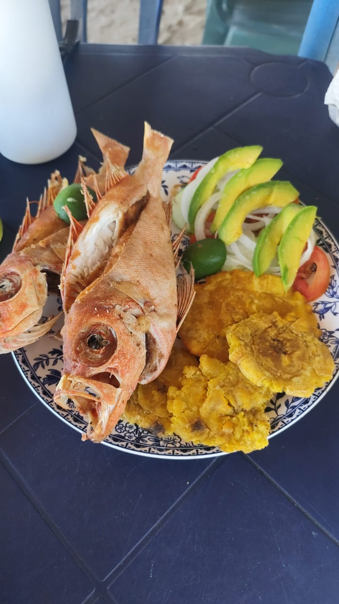
Este es el plato emblemático de nuestra comunidad costera, un símbolo de identidad y sabor que reúne a la familia cada fin de semana. Se prepara con el frescor del mar, capturado en la faena del día, para llevar a la mesa lo mejor de nuestras costas.
Para este manjar caribeño utilizamos: Pescado fresco: Limpio y sazonado al gusto. Acompañantes: Arepas de maíz (asadas o fritas), tajadas de plátano maduro y una ensalada fresca de cualquier variante aunque comúnmente se usa tomate y cebolla.
Lo maravilloso de este plato es su versatilidad, ya que se puede preparar con una gran variedad de especies locales como: Carite, Carrachana, Sardina, Tajalí, Coro-coro, Pargo, Tonquicha, Atuncito, Chicharra, Lisa y muchas otras según la temporada.
Se limpia muy bien el pescado, haciendo incisiones laterales para que el sabor penetre mejor. Se condimenta con sal, ajo y un toque de limón (algunos prefieren mantenerlo simple para resaltar el sabor del mar). En un caldero con aceite bien caliente, se fríe el pescado hasta que la piel esté dorada y crujiente, manteniendo la carne jugosa por dentro. Se sirve inmediatamente acompañado de las arepas calientes, las tajadas dulces y la ensalada. Este es, sin duda, uno de los platillos más comunes y queridos en El Morro de Puerto Santo, donde el aroma del pescado frito es parte esencial de nuestro paisaje.
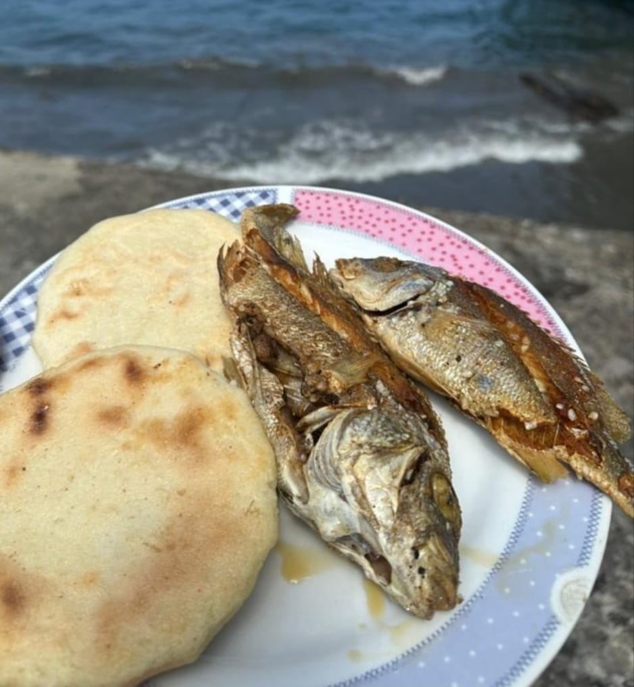
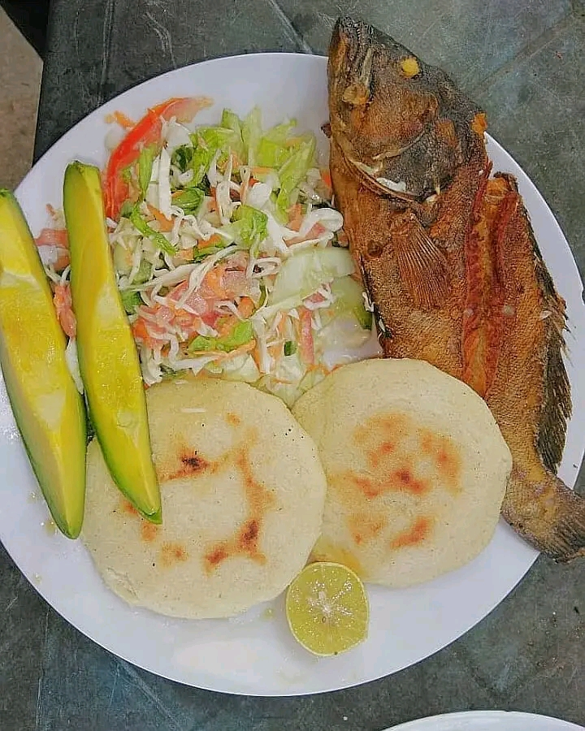
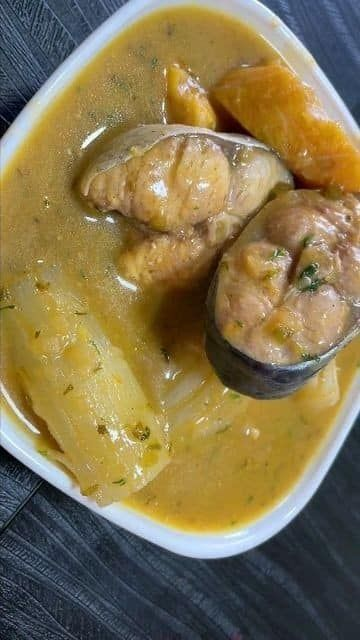
Más que una simple sopa, este plato es un bálsamo reconfortante que concentra toda la esencia del mar. Es la elección predilecta para renovar energías, ideal para los domingos en familia donde se busca un sabor que hable de hogar y tradición.
El secreto de su sabor profundo reside en la frescura de sus componentes; Caldo concentrado de pescado fresco del día. Una combinación perfecta de yuca, chino, auyama, ocumo, ñame y plátano verde, que aportan la textura ideal. Aliños tradicionales, con el toque indispensable del ají dulce y el cilantro fresco. Aunque cada familia guarda su "secreto", se puede preparar con distintos pescados locales que aportan su carácter único al caldo.
Se inicia con un caldo base utilizando las piezas de pescado más gustosas y los aliños sofritos para potenciar el aroma. Se añaden las verduras, dejando que se ablanden hasta que el caldo tome cuerpo. Se agrega el pescado fresco al final para que mantenga su textura perfecta, sirviéndose bien caliente en cuencos que desprenden un aroma irresistible.
En El Morro de Puerto Santo, no hay nada que reconforte más el cuerpo y el espíritu que un buen hervido, hecho con el orgullo de nuestra pesca artesanal.
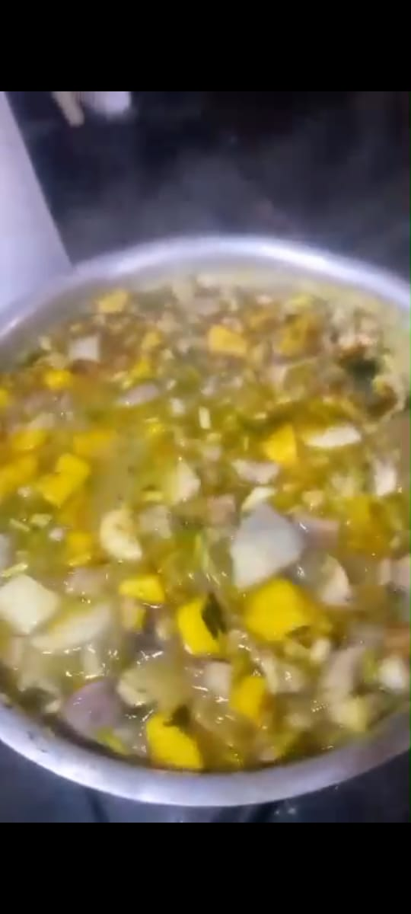
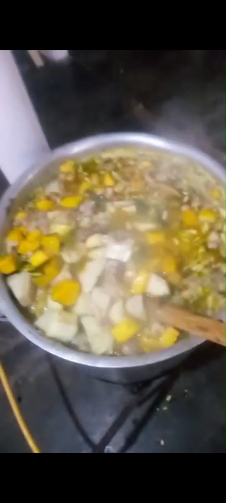
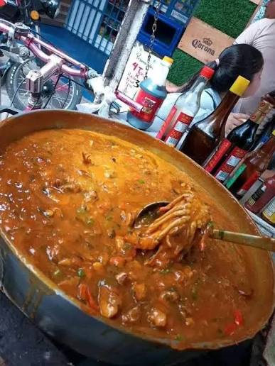
Si hay un plato que define la fiesta, el trasnocho y la energía de El Morro de Puerto Santo, es sin duda el Asopado de mariscos. A diferencia de un hervido tradicional, este es un festival de texturas y sabores marinos, conocido por su consistencia espesa y reconfortante que parece "resucitar" a cualquiera después de una noche de baile o una larga jornada bajo el sol.
Es el alma de nuestras temporadas playeras y el protagonista de las ventas nocturnas, donde el aroma del mar atrae a propios y visitantes por igual.
Lo que hace único a este asopado es su base: un caldo sustancioso donde la auyama es la reina. Esta se cocina hasta deshacerse, otorgándole ese color naranja vibrante, una textura aterciopelada y un dulzor sutil que equilibra perfectamente el salitre de los frutos del mar.
La magia de este platillo reside en su impresionante combinación de frutos del mar, donde se mezclan con generosidad el mejillón, la pepitona, el caracol, el camarón, el cangrejo y la langosta, todos sumergidos en un caldo espeso cuya base inconfundible es la auyama, encargada de darle ese color vibrante y esa textura única.
En El Morro de Puerto Santo, el asopado es el verdadero protagonista de las temporadas playeras; es la estampa típica ver a los vendedores recorriendo la orilla con sus ollas humeantes o encontrarlo como el gran final en las fiestas nocturnas, donde se sirve bien caliente para renovar las energías. Es, sin duda, el sabor que acompaña la alegría de nuestra gente y el aroma que define nuestras noches de celebración frente al mar.
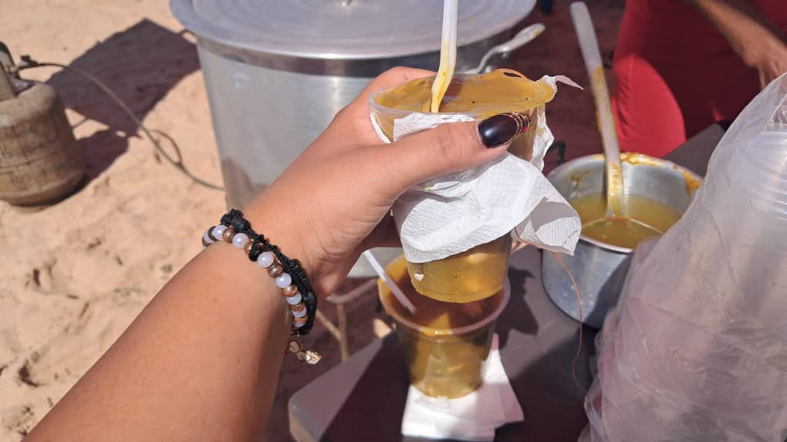
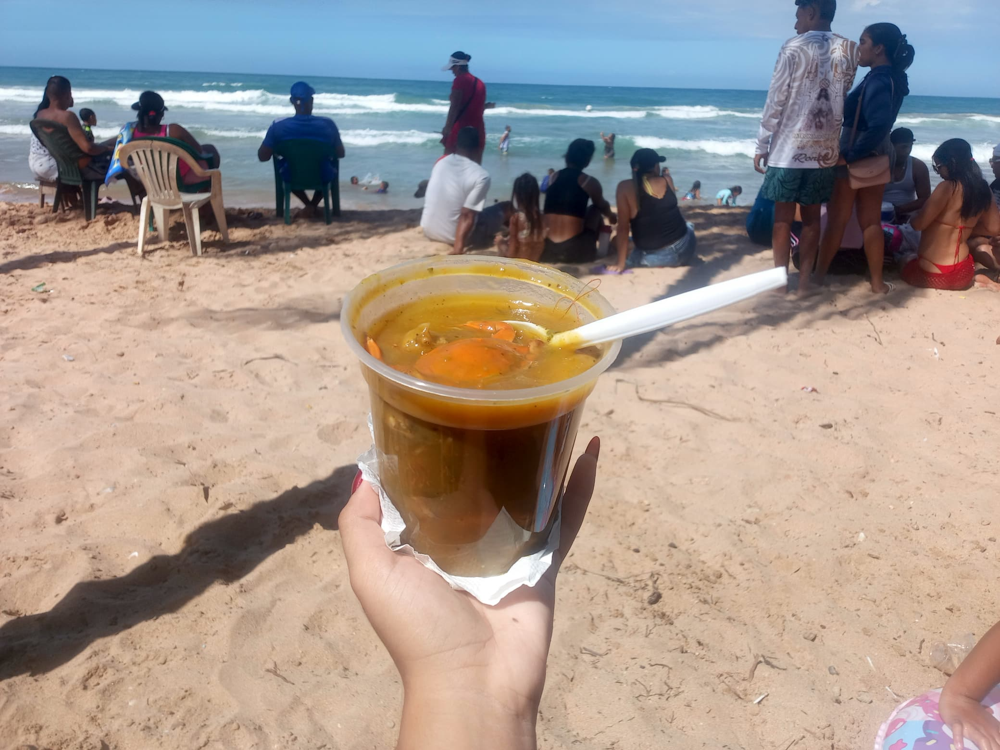
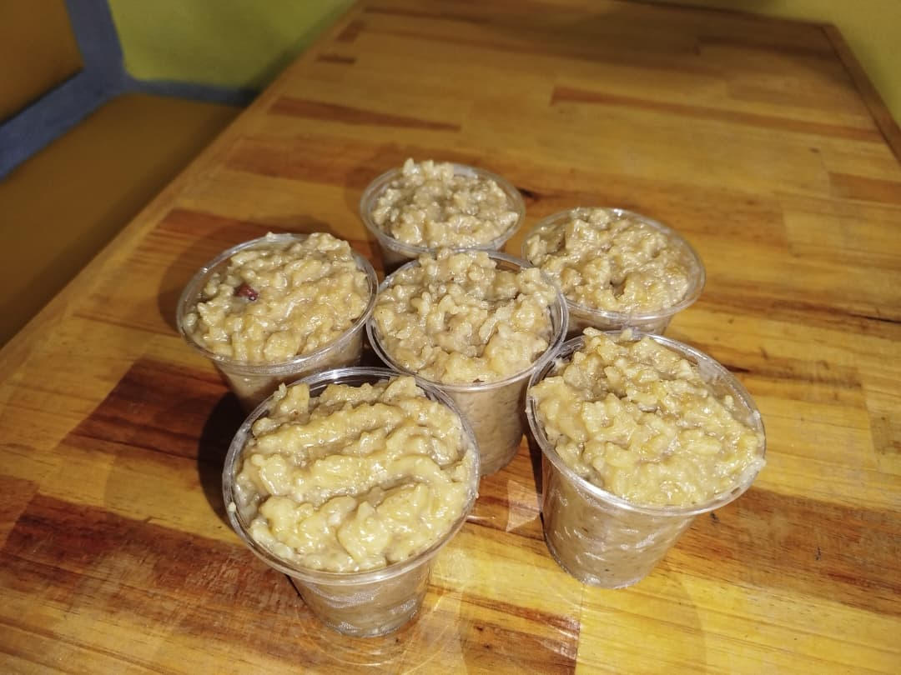
Si buscas la verdadera esencia del oriente venezolano, el arroz con coco es el embajador indiscutible de nuestra dulcería. Este postre no es solo una receta, es un pedazo de historia que se sirve en su mayoría en vasos y que define la identidad de nuestra costa. En el pintoresco pueblo de El Morro de Puerto Santo, el aroma a coco recién rallado y canela inunda las calles, donde muchas familias han convertido este manjar en un próspero emprendimiento local. Para el turista, probar un arroz con coco a la orilla del mar es la bienvenida oficial al paraíso; es sentir el calor de nuestra gente y la dulzura de nuestra tierra en cada cucharada, apoyando además el talento de los emprendedores que mantienen viva esta tradición.
La preparación más criollita y auténtica comienza extrayendo la leche pura de dos cocos grandes para cocinar el arroz junto a astillas de canela, logrando una base aromática y suave. El secreto de su color dorado y su sabor profundo reside en el uso de la panela de papelón, que se ralla y se incorpora lentamente hasta que se funde en un melao brillante. Con una pizca de sal para equilibrar los sabores y un movimiento constante con paleta de madera, el arroz alcanza una textura cremosa irresistible que se corona con un toque final de canela en polvo. Es un proceso artesanal que respeta los tiempos de la cocina de antaño para garantizar una explosión de sabor en el paladar.
En conclusión, degustar este arroz con coco es mucho más que un placer culinario; es sumergirse en una tradición que ha pasado de generación en generación y que hoy representa el motor económico de muchas manos trabajadoras en El Morro. Cada porción vendida cuenta la historia de un pueblo orgulloso de sus raíces y de su capacidad para emprender con lo que la naturaleza le regala. No puedes decir que visitaste nuestras tierras sin haberte dejado seducir por este manjar, el recuerdo más dulce y auténtico que cualquier viajero puede llevarse de su paso por nuestras costas.
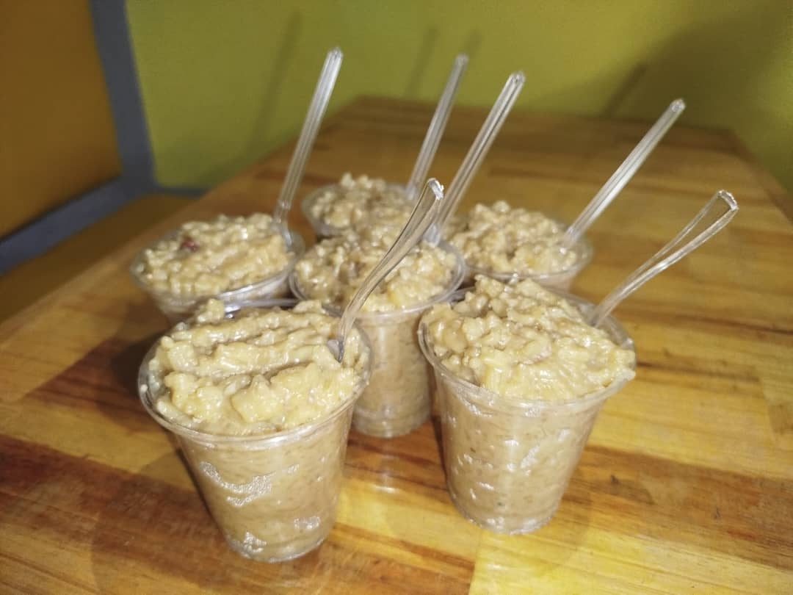
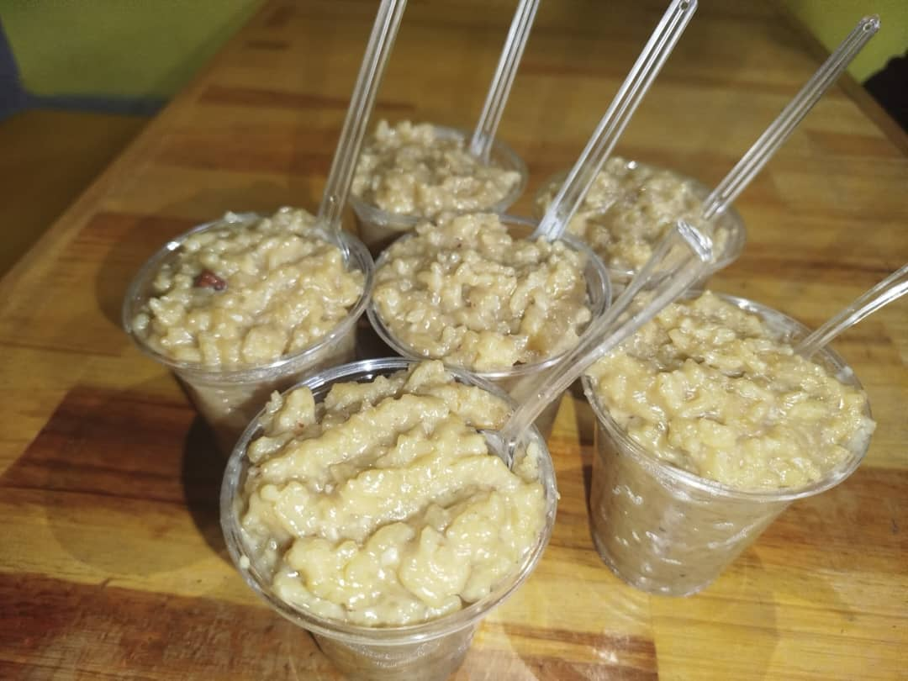
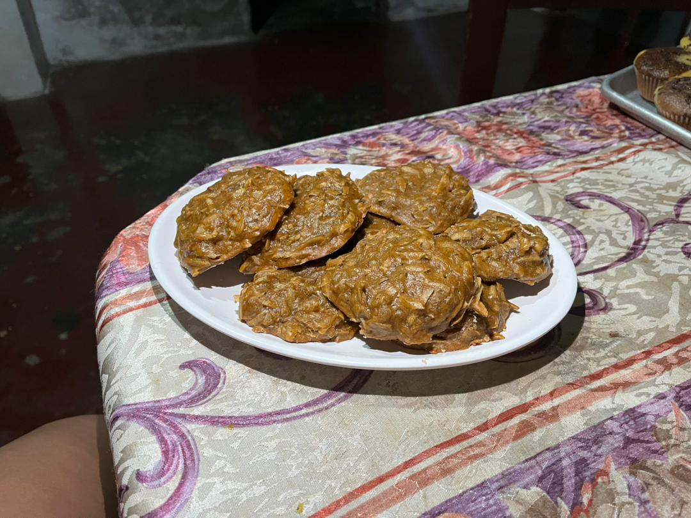
No existe bocado que represente mejor el cariño de nuestra tierra que un besito de coco recién horneado. Su secreto reside en la alquimia perfecta entre el coco rallado y el papelón oscuro, que al fundirse con el aroma del clavo de olor, le otorga ese color caoba intenso y rústico tan característico. Cada pieza es una pequeña joya de contrastes: crujiente en sus orillas tostadas por el calor del horno, pero sorprendentemente suave y esponjosa en su centro, guardando toda la humedad y el dulzor profundo del trapiche.
Al igual que nuestro emblemático arroz con coco, los besitos son el alma del emprendimiento en El Morro. En cada temporada vacacional, las bandejas rebosantes de estos dulces se convierten en el producto estrella para ofrecer a los turistas, quienes buscan llevarse un pedacito del sabor auténtico de nuestras costas. Es común ver a las familias locales preparando grandes hornadas, pues este manjar es el sustento de muchas manos trabajadoras que ven en el coco y el papelón una oportunidad para prosperar compartiendo nuestra herencia culinaria con cada visitante.
En los hogares de nuestro pueblo, estos dulces son el lenguaje del afecto y la hospitalidad. Disfrutar de un besito de coco junto a un café bien cargado es sumergirse en una costumbre centenaria, donde la sencillez de los ingredientes se une para crear el recuerdo más dulce, crujiente y auténtico que cualquier viajero puede encontrar en su paso por El Morro.
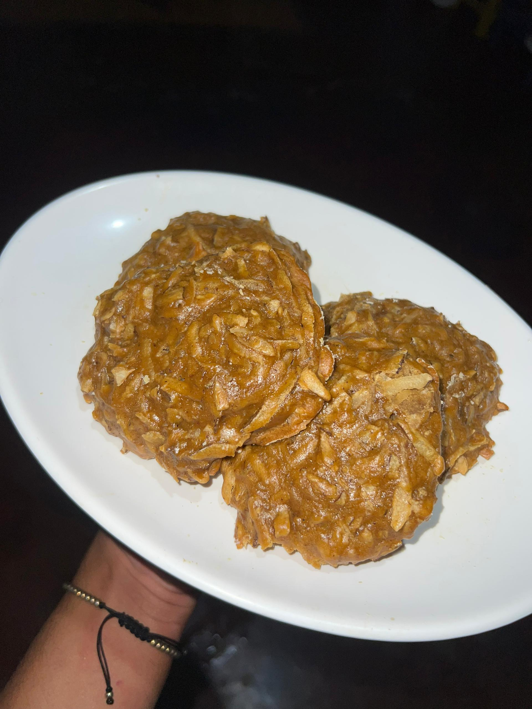
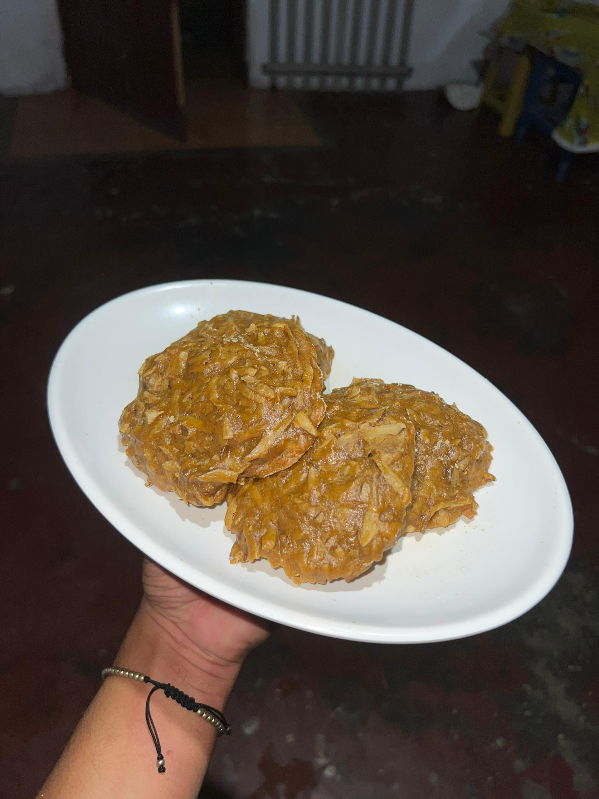
Si el arroz con coco es el rey de las tardes, el marejete es el tesoro mejor guardado de la cocina tradicional en El Morro de Puerto Santo. Este postre, de raíces profundamente criollas, es una variante del majarete pero con una personalidad propia: una crema densa y deliciosa elaborada a base de maíz tierno o harina de maíz, cocida lentamente con la leche de cocos frescos y endulzada con el infaltable papelón. Su textura es un equilibrio perfecto entre lo firme y lo sedoso, desprendiendo un aroma embriagador gracias a la infusión de canela y clavitos de olor que perfuman cada caldero durante su preparación.
Al igual que otros dulces de la zona, el marejete representa una oportunidad de oro para los emprendedores locales, quienes preparan grandes bandejas para ofrecer por raciones a los turistas que visitan nuestras playas. Es especialmente buscado durante la Semana Santa y las temporadas altas, donde los visitantes quedan prendados de ese color canela y ese sabor que evoca la cocina de la abuela. Servido tradicionalmente en platos hondos o recipientes individuales y coronado con una generosa lluvia de canela en polvo, el marejete es el cierre perfecto para un banquete de mariscos, ofreciendo un contraste dulce que reconforta el alma.
El marejete no es solo un alimento, es un símbolo de la hospitalidad sucrense y del ingenio de nuestra gente para transformar el maíz y el coco en una obra de arte. En cada rincón de Puerto Santo, probar un marejete es apoyar el sustento de familias que mantienen viva una técnica ancestral, asegurando que el sabor de lo auténtico nunca se pierda. Es, sin duda, una parada obligatoria para todo aquel que desee conocer el verdadero espíritu dulce del oriente venezolano.
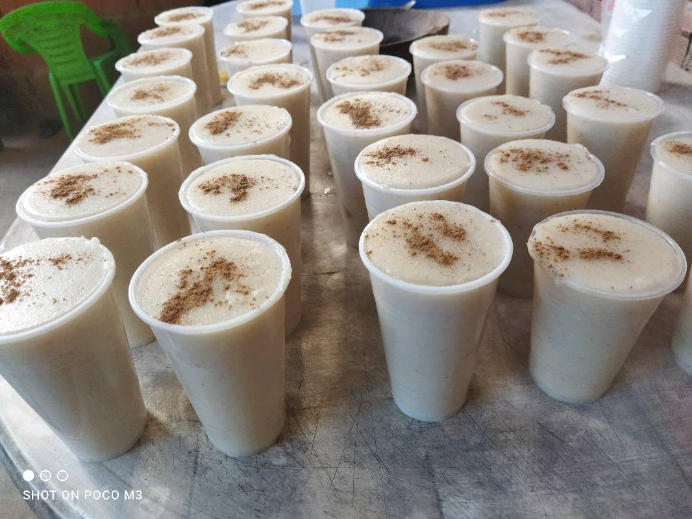
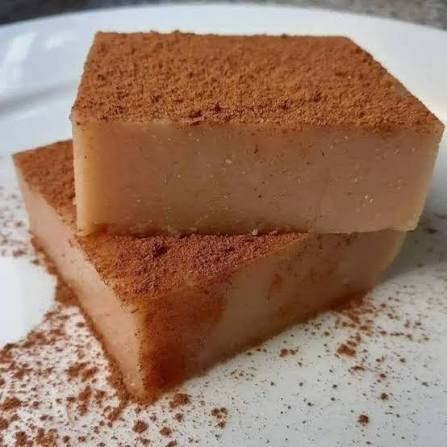
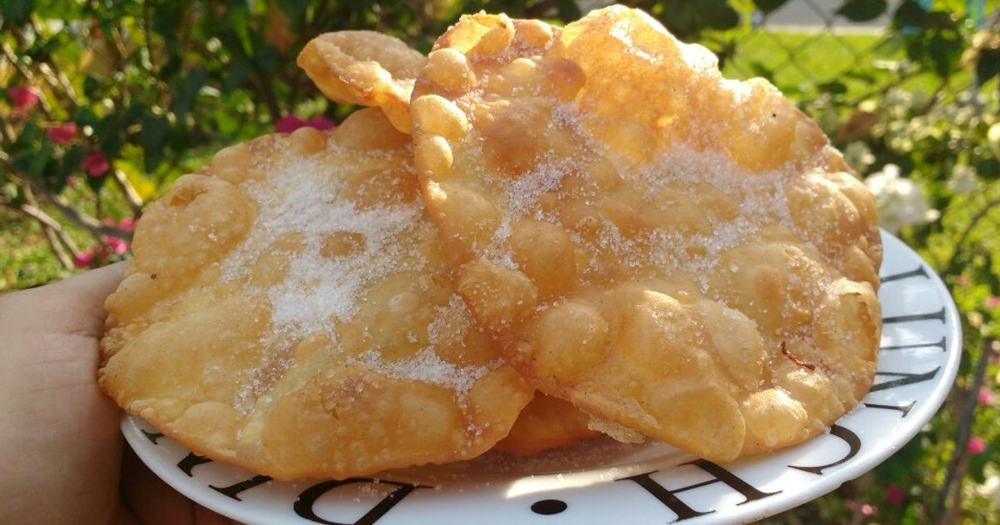
Si hay un aroma que compite con el salitre del mar, es el de las torrejas recién fritas. Este tesoro de la cocina criolla es la máxima expresión de cómo pocos ingredientes —harina, agua, una pizca de sal y mucha técnica— pueden transformarse en una delicia irresistible. Cada torreja es una lámina de masa estirada con maestría hasta quedar casi transparente, para luego ser sumergida en aceite hirviendo hasta que se infla y adquiere ese dorado perfecto y una textura quebradiza que estalla en sabor con cada mordida.
En El Morro, las torrejas son un pilar fundamental del emprendimiento local. Es el desayuno o la merienda preferida de los turistas que, al verlas exhibidas en grandes bandejas o cestas, no pueden resistirse a su encanto. Aunque existen versiones sencillas espolvoreadas con azúcar.
Para el visitante, comer una torreja caliente frente al mar es participar en un ritual de hospitalidad. Son el sustento de muchas familias que, con su caldero a la leña o cocina sencilla, mantienen viva esta tradición que pasa de padres a hijos. Degustarlas es saborear el ingenio de nuestra gente y llevarse en el paladar el crujido más dulce de todo el estado Sucre. ¡Una experiencia que ningún turista debería dejar pasar!
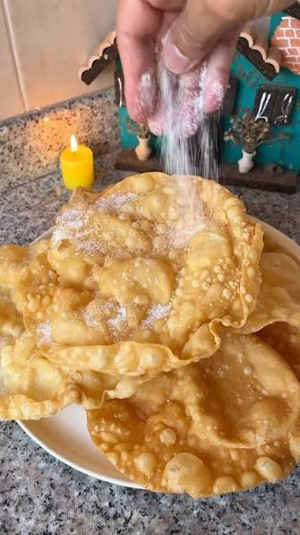
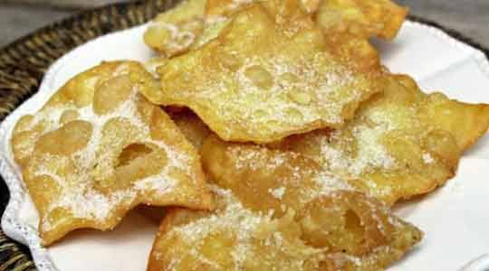